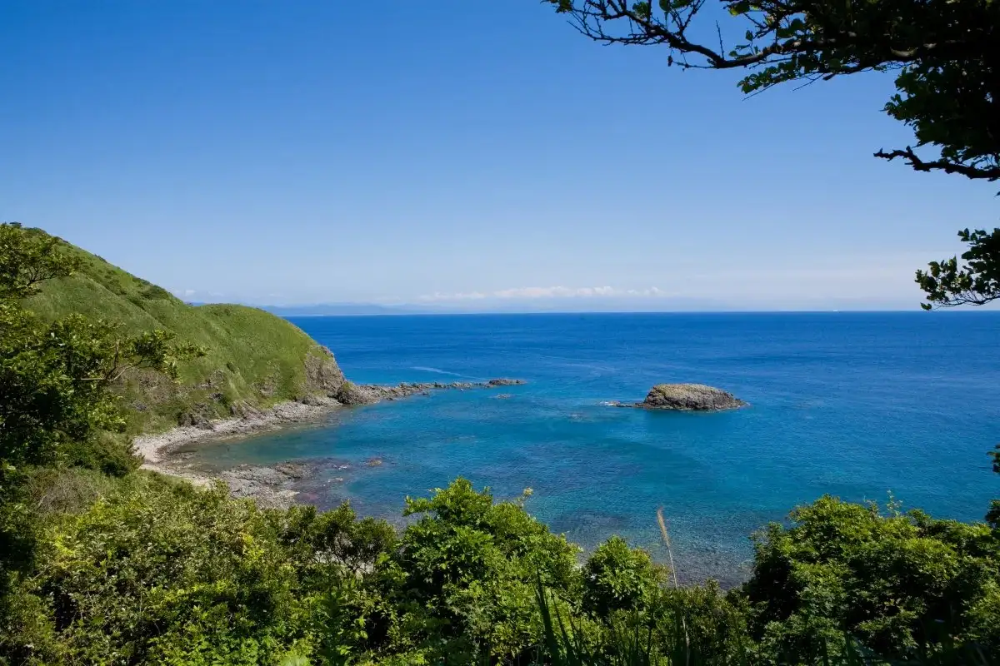
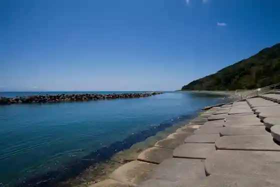
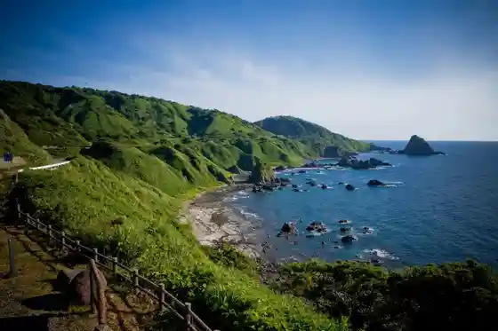
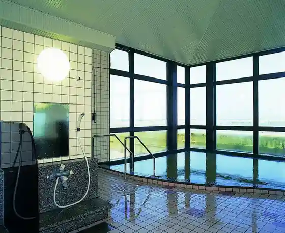
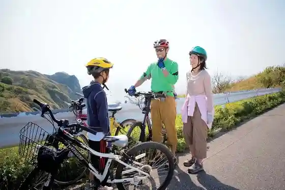

Japan / Niigata / Awashimaura
Awashimaura, Niigata: things to do, food and stays
Awashimaura · Niigata
Awashimaura
Highlighted on the Niigata map.

Sights
Uchiura Campground
Awashimaura, Niigata · 0254-55-2146 · Official / source link

Hotokezaki Lookout
Awashimaura, Niigata · 0254-55-2146 · Official / source link

Isaribi Onyoku Oto Hime Baths
Awashimaura, Niigata · 0254-55-2146 · Official / source link

Awashima Saikururodo
Awashimaura, Niigata · 0254-55-2111 · Official / source link

Uchiura Beach
Awashimaura, Niigata · 0254-55-2146 · Official / source link
Awashima Coast
Awashimaura, Niigata · 0254-55-2146 · Official / source link
Wappa Ni
Awashimaura, Niigata · 0254-55-2146 · Official / source link
Kamaya Campground
Awashimaura, Niigata · 0254-55-2146 · Official / source link
Hachiman Hana Lookout
Awashimaura, Niigata · 0254-55-2146 · Official / source link
Iso Dako Tori Tour
Awashimaura, Niigata · 0254-55-2146 · Official / source link
Kamaya Beach
Awashimaura, Niigata · 0254-55-2146 · Official / source link
Anazuri Ri Experience
Awashimaura, Niigata · 0254-55-2146 · Official / source link
Machiaruki
Awashimaura, Niigata · 0254-55-2146 · Official / source link
Fotofuremu Tsukuri
Awashimaura, Niigata · 0254-55-2146 · Official / source link
Shiikayakku Experience
Awashimaura, Niigata · 0254-55-2146 · Official / source link
Wappa Ni Tsukuri Experience
Awashimaura, Niigata · 0254-55-2146 · Official / source link